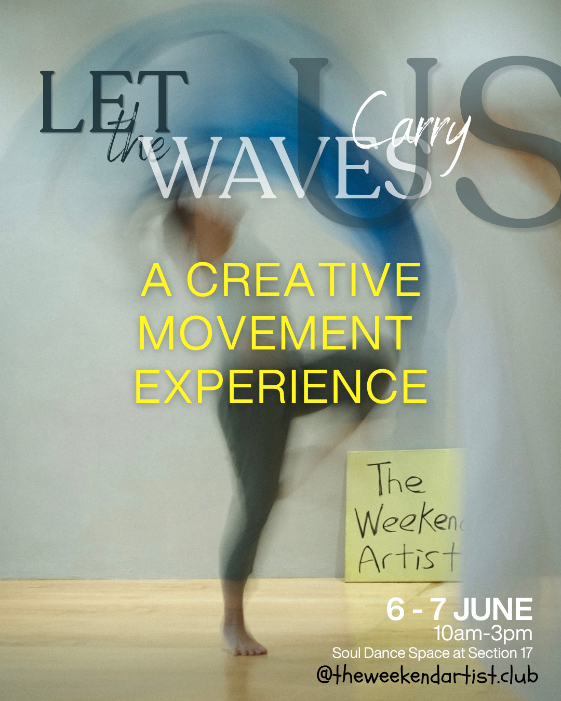
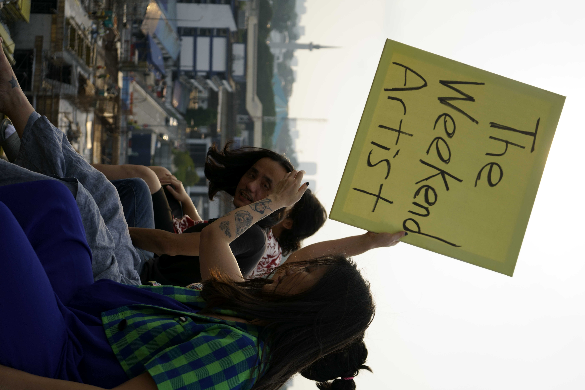
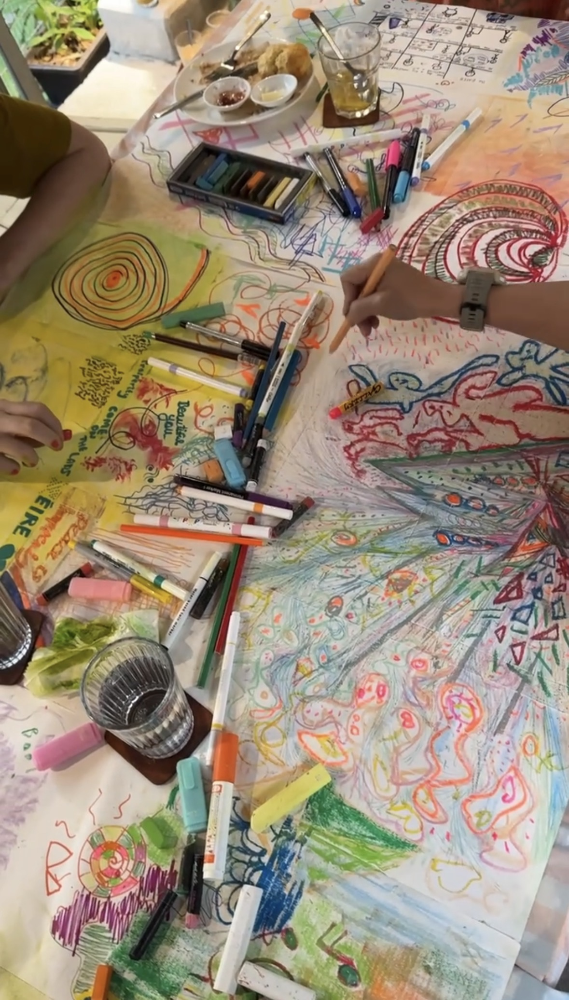
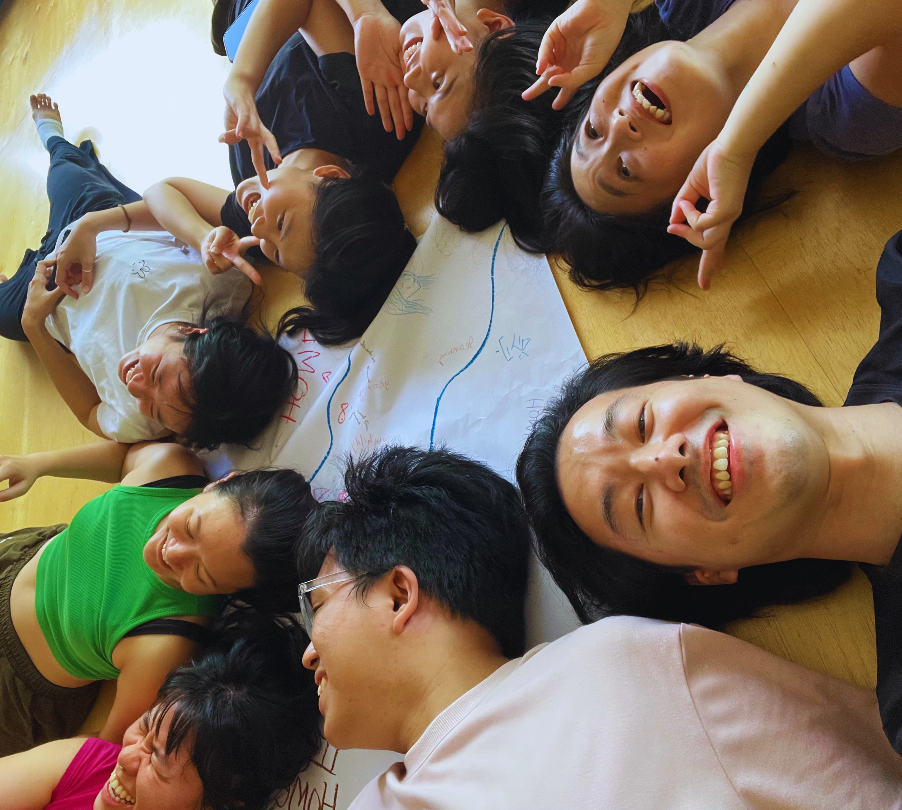
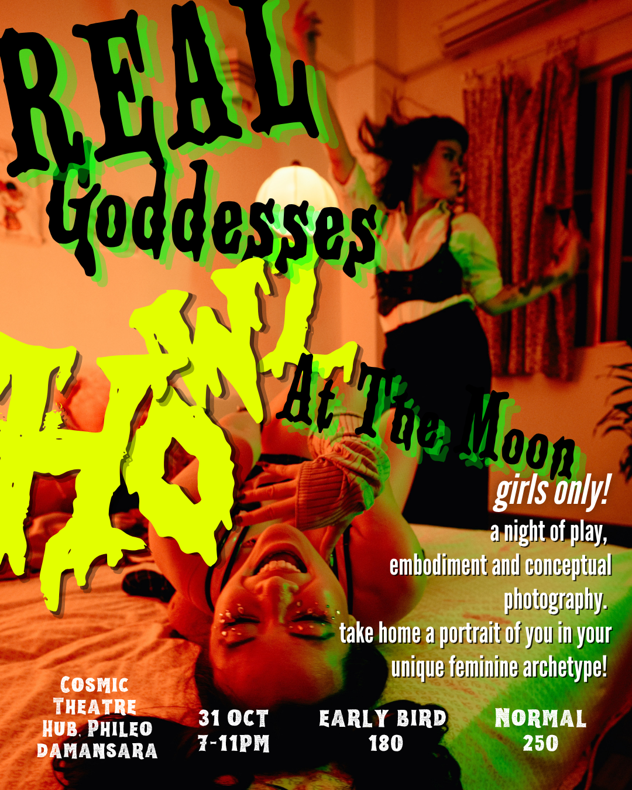

01
The Weekend Artist
Co-Founder · Creative Director · Experience Designer · Lead Facilitator · 2026
The Weekend Artist is a multidisciplinary creative experience designed to bring people together through movement, drawing, play and artistic exploration. Rooted in embodiment and community, it creates space for connection, expression and collaboration.
Full case study



